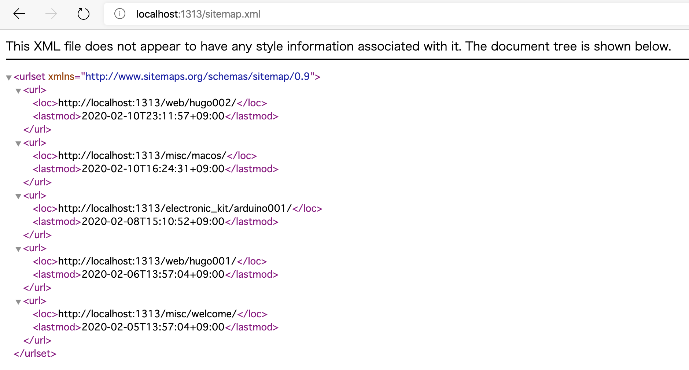
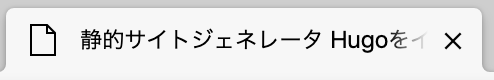
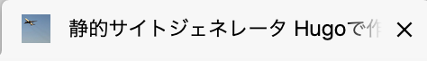
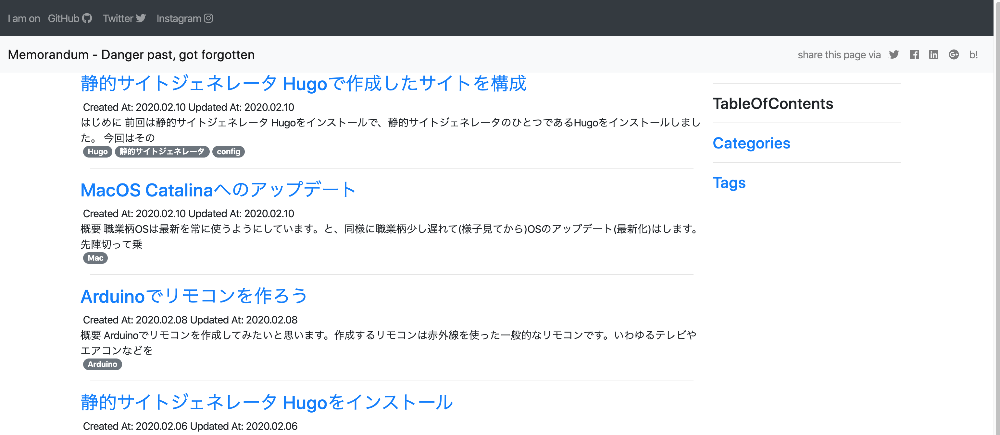
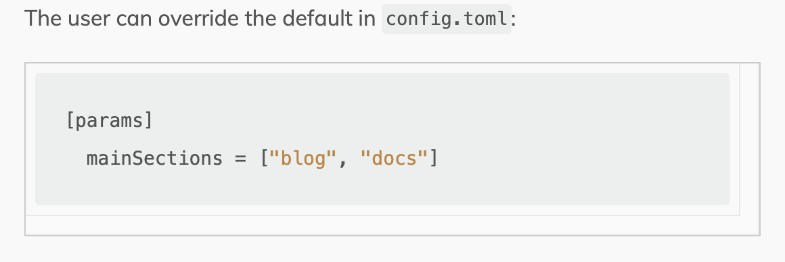
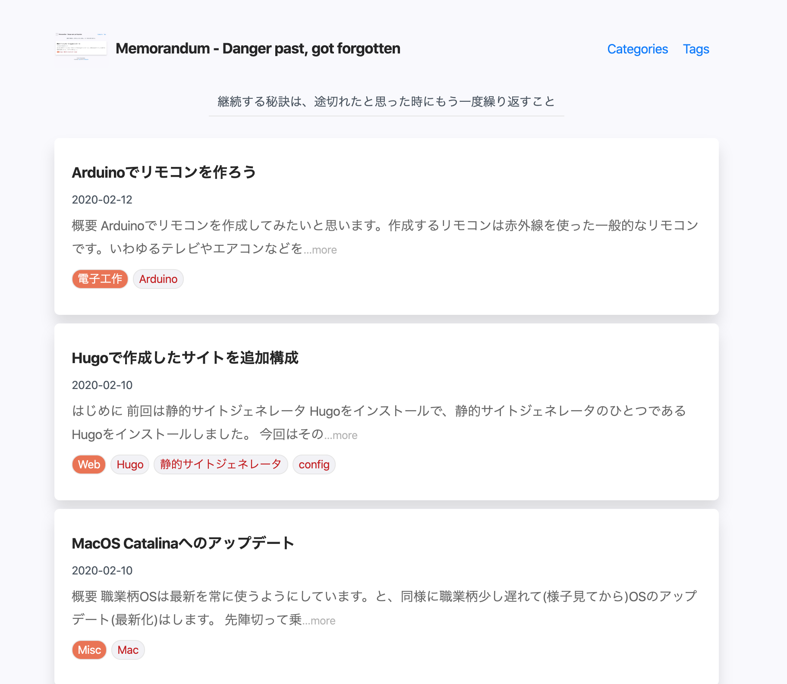
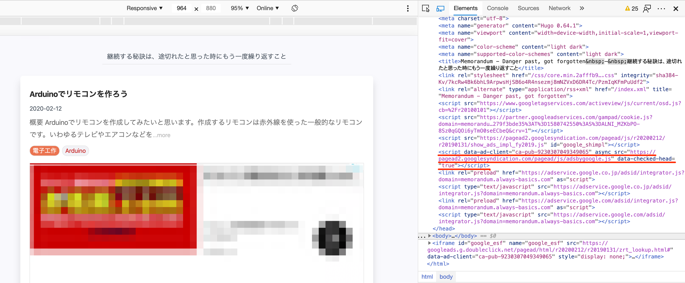

はじめに
前回は静的サイトジェネレータ Hugoをインストールで、静的サイトジェネレータのひとつであるHugoをインストールしました。 今回はそのサイトに記事を増やす方向の充実ではなく、機能や構成を充実させていく方向でのメモをです。
この記事は、順次追記されて充実していきます。(つまり、最初は数個しかトピックがありません)
お品書き
Hugoで作成したサイトに追加構成
sitemap.xml
Googleさんをはじめ各種サーチエンジンに正しく認識してもらうためにも、sitemap.xmlがあった方がいいですね。 Hugoは自動的にsitemap.xmlが生成されています。
ただ、カテゴリーやタグのページはページ自体をコンテンツとして見たときに纏まっているわけではなく、あくまで集合体、リンク集に過ぎません。 そのため、すべてをsitemap.xmlに載せたくない。そんなときに、sitemap.xmlは自動生成させるも、いいさじ加減にするための方法がこちらです。
これがGoogle先生に気に入られるという話ではありません。こうやったら出来るんですよ。この作りを覚えておきましょうねというものです。
設定方法
layoutsディレクトリ配下に以下のsitemap.xmlファイルを配置するだけです。
<urlset xmlns="http://www.sitemaps.org/schemas/sitemap/0.9">
{{ range .Data.Pages }}
{{ if .IsPage }}
<url>
<loc>{{ .Permalink }}</loc>
{{ if not .Lastmod.IsZero }}
<lastmod>{{ safeHTML ( .Lastmod.Format "2006-01-02T15:04:05-07:00" ) }}</lastmod>
{{ end }}
</url>
{{ end }}
{{ end }}
</urlset>
雑でも説明はあった方が良いかと思いますので致しますと、ページある分だけループを回してそのページがコンテンツのページだったら sitemap.xmlに載るようにし、最終更新日時がとれなかったらそれは出さないようになっています。
ま、このサイトではGoは知らぬ存ぜぬの立場で書いていますので、この要件で良ければこのままコピペで良いと思います。
確認
http://localhost:1313/sitemap.xmlにアクセスして下さい。
もちろんこれは、前回も記載しましたがhugo server -wを実行している前提です。

Google Analytics
Google Analyticsとの連携は、拍子抜けするほど簡単です。
設定方法
config.tomlに以下を設定するだけです。
# Google Analytics
googleAnalytics = "UA-xxxxx-xx"
確認
これに関しては、確認を割愛します。
Favicon.ico
Favicon.icoってなんだ？って方がもしもいらっしゃった場合に、その話をスルーしてしまうと悲しいことになってしまうので、 念のためにいたしますと、ブラウザを開くとタブの左端に着いているアイコン、それからブックマークしたときなどにも使われているアイコンです。

これはなにも設定していないときの例ですね。
設定方法
Hugoで作成したサイトで、favicon.icoを配置したいとおもったら、やることは単純です。 staticディレクトリの直下にfavicon.icoをおくだけで設定できます。
確認
HugoにFaviconを設定した後の確認です。 
適当に写真を切り取って使いましたが、やはりアイコンとしてデザインしたモノを用意した方が良いですね。
テーマを変更
単なる思いつきですが、このタイミングでテーマを変更してみたいと思います。
選んだのはこちら。 Techlog Simple
設定方法
ガイドされている方法に逆らってしまいますが、submodueとして加えます。
まずはインストールから。
git submodule add https://github.com/mazgi/hugo-theme-techlog-simple.git themes/hugo-theme-techlog-simple
続いてテーマを有効にしておきます。
hugo -t hugo-theme-techlog-simple
たぶん、何個か怒られると思います。 たぶん、次のconfig.tomlファイルの修正で治ると思います。
今あるconig.tomlファイルをバックアップして、代わりにこちらで置き換えます。 その例がこちらです。
baseURL = "http://memorandum.always-basics.com/"
languageCode = "en-us"
title = "Memorandum - Danger past, got forgotten"
theme = "hugo-theme-techlog-simple"
defaultContentLanguage = "ja"
hasCJKLanguage = true
enableEmoji = true
pygmentsCodeFences = true
pygmentsStyle = "friendly"
enableGitInfo = false
enableRobotsTXT = true
copyright = "©2020 Always Basics."
# Google Analytics
googleAnalytics = "UA-75025058-6"
[params]
description = "継続する秘訣は、途切れたと思った時にもう一度繰り返すこと"
[params.sns]
github = "mazgi"
twitter = "mazgi"
instagram = "mazgi"
# facebook = ""
[taxonomies]
category = "categories"
tag = "tags"
author = "authors"
# [languages]
# [languages.en]
# weight = 1
# languageName = "English"
# [languages.ja]
# weight = 10
# languageName = "日本語"
logo = "/images/logo.jpg"
# disqus
disqusShortname = "kzthrk" # your short name
確認
確認といっても単に表示するだけです。 http://localhost:1313/にアクセスして下さい。

無事に変更できていました。
TOPページに記事がリストされない
なんだかTOPページに追加したはずの記事がリストされません。ですが、カテゴリーとかタグから辿ると確かに存在します。 どうも、見えているのはWebカテゴリーに投稿した記事のみのようです。
ということで、どんなことになっているのか見てみます。 まずはthemas/hugo-notepadium/layouts/index.htmlですね。
{{- define "main" -}}
{{- partial "homepage-body.html" . -}}
{{- $paginator := .Paginate (where site.RegularPages "Type" "in" site.Params.mainSections) -}}
{{- partial "note-list.html" $paginator -}}
{{- partial "pagination.html" $paginator -}}
{{- end -}}
えっ!？これHTMLなの？状態ですが、気にしません。
{{- partial "note-list.html" $paginator -}}
をみるとnote-list.htmlとか$paginatorあたりが気になりますが、note-list.htmlを見て見ます。
パスはthemes/hugo-notepadium/layouts/partials/note-list.htmlです。
・・・
<ul class="note list">
{{- range $paginator.Pages -}}
<li class="item"><a class="note" href="{{- .RelPermalink -}}">
・・・
抜粋ですが、どうやらここみたいな雰囲気ですね。 つまりは、$paginatorに入っていればループが回って表示されるんじゃないかという推測です。
ふと元のindex.htmlを見ると、
{{- $paginator := .Paginate (where site.RegularPages "Type" "in" site.Params.mainSections) -}}
という行があります。site.Params.mainSectionsなんてステキなキーワードが見つかりました。
Google先生にお尋ねして探してみると、こんなページがあります。 https://gohugo.io/functions/where/#mainsections

まさにキタコレ。
設定
というわけで、config.tomlにmainSectionsを追加してみます。
[params]
mainSections = ["electronic_kit", "misc", "programming", "web"]
確認

無事に出てくるようになりました！
HugoでGoogle Adsenseに対応してみる
HugoでGoogle Adsenseに対応させてみたいと思います。
根本的には<HEAD>...</HEAD>に任意の文字列と挿入できればゴールです。
以下のようなコードを入れるように指示されたと思います。 個別に広告を配置する場合、投稿(mdファイル)毎にHTMLを直書きする感じで対応するイメージでしょうか。
<script data-ad-client="ca-pub-000000000000000000" async src="https://pagead2.googlesyndication.com/pagead/js/adsbygoogle.js"></script>
※0000・・・の部分はご自身のもので置き換えて下さいね。
設定
まずthemes/hugo-notepadium/layouts/_default/baseof.htmlをみると、HEADタグの中身はhead.htmlに任せているようですね。
<!DOCTYPE html>
<html lang="{{- site.Language.Lang -}}">
{{- partial "head.html" . -}}
<body>
<div class="base-body">
{{- partial "header.html" . -}}
<div id="content">
{{- block "main" . -}}{{- end -}}
</div>
{{- partial "footer.html" . -}}
</div>
</body>
</html>
なのでthemes/hugo-notepadium/layouts/partials/head.htmlを見てみます。
<meta charset="utf-8">
{{- hugo.Generator -}}
<meta name="viewport" content="width=device-width,initial-scale=1,viewport-fit=cover">
<meta name="color-scheme" content="light dark">
<meta name="supported-color-schemes" content="light dark">
{{- define "title" -}}
{{- $title := .Title -}}
{{- if and (ne $title "") (ne $title site.Title) -}}
<title>{{- $title | safeHTML -}} – {{- site.Title | safeHTML -}}</title>
{{- else -}}
{{- $slogan := site.Params.slogan -}}
<title>{{- site.Title | safeHTML -}}{{- if and (isset site.Params "slogan") (ne $slogan "") -}} –
{{- $slogan | safeHTML -}}{{- end -}}</title>
{{- end -}}
{{- end -}}
{{- block "title" . -}}{{- end -}}
{{- partial "style.html" . -}}
{{- partial "rss-feed.html" . -}}
{{- partial "head-extra.html" . -}}
まぁ、ごちゃごちゃ書いてありますが、こっちは中身は何にも分からないという前提で突き進んでいますので、一番下の行に注目です。 なにやら、追加があったらそれらはこのextraファイルに書いてね、という雰囲気を感じますね。
なのでthemes/hugo-notepadium/layouts/partials/head-extra.htmlを見てみます。
<!--
for user-side override
-->
どうやらあたりのようです。
ということで、layouts/partials/head-extra.htmlを作り、以下のようにしました。
<!--
for user-side override
-->
<script data-ad-client="ca-pub-000000000000000000" async
src="https://pagead2.googlesyndication.com/pagead/js/adsbygoogle.js"></script>
確認
実際に広告が配信されることを持って確認としても良いのですが、一応やったことの確認ということで。

他にも自動で挿入されているんだと思いますが、一応下線を引いたところが追加されているのでよしとします。
リンクを別タブで開く
リンクを別タブで開く方法としては、全て別タブになってしまうのを避けるため、結果的には次のHTMLタグの混在を許可で HTMLタグを直接記載することで実現しました。
が、その時に他の方法についても知ることになったので、それを記録しておくものです。
それは以下をHTMLのheadタグに追加するというモノです。
<base target="_blank">
おそらくほとんどのテーマには、テーマのソースコードは変更せずにユーザーコードを追加出来るようになっていると思います。
テーマがHugo Notepadiumであれば、head-extra.html、
erblogであれば、self-define-head.htmlに上記を記載することで全てのページでこの設定が有効になるはずです。
HTMLタグの混在を許可
Hugoの良いところの1つとして、記事をMarkdownで記述出来るところが挙げられます。 ですが、Markdownで許された範囲を超えた表現が欲しくなるということが起こりえます。
私の場合のきっかけは、リンクを別タブで開くというものでした。 ですが、この方法では他のリンクまで全て別タブで開いてしまうため、この方法を調べたということです。
さて、ちょっと古い情報だとHugoではMarkdownがblackfridayというエンジンで処理されているということで、 その方法が紹介されているのを見かけましたが、どうやら何の変化も起こらずエンジンが変わってしまったようだなと。
ということで、変わったということを加味してGoogle先生に聞いてみると、どうやらgoldmarkに変わっているようです。 変わったのはHugo v0.60.0からで、変わっているといっても選択式で戻すことも可能なようです。
パーサー変更方法
[markup]
defaultMarkdownHandler = "blackfriday"
HTMLタグを許可する設定
[markup.goldmark.renderer]
unsafe = true # enable raw HTML in Markdown
以上
comments powered by Disqus